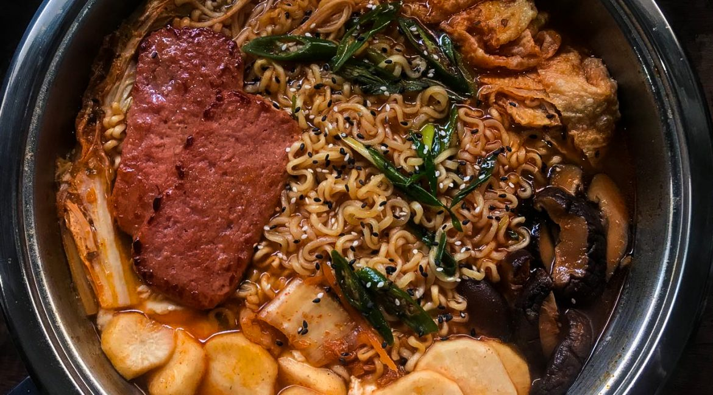

Ramen Recipe!

Ingredients
- 2 packs of Shin Ramen
- Spam
- Gochujang
- Sausage
- Lettuce
- Eggs
- Cilantro
- Sesame seeds
- Mushrooms
Steps
- Bring water to a boil
-
Add sliced Spam and Sausage and
Lettuce and Mushrooms
into the pot
- Cook for 2 minutes
- Add ramen packs and seasoning to the pot
- Cook until your preferred aldenteness
- Garnish with Sesame Seeds and Cilnatro and serve